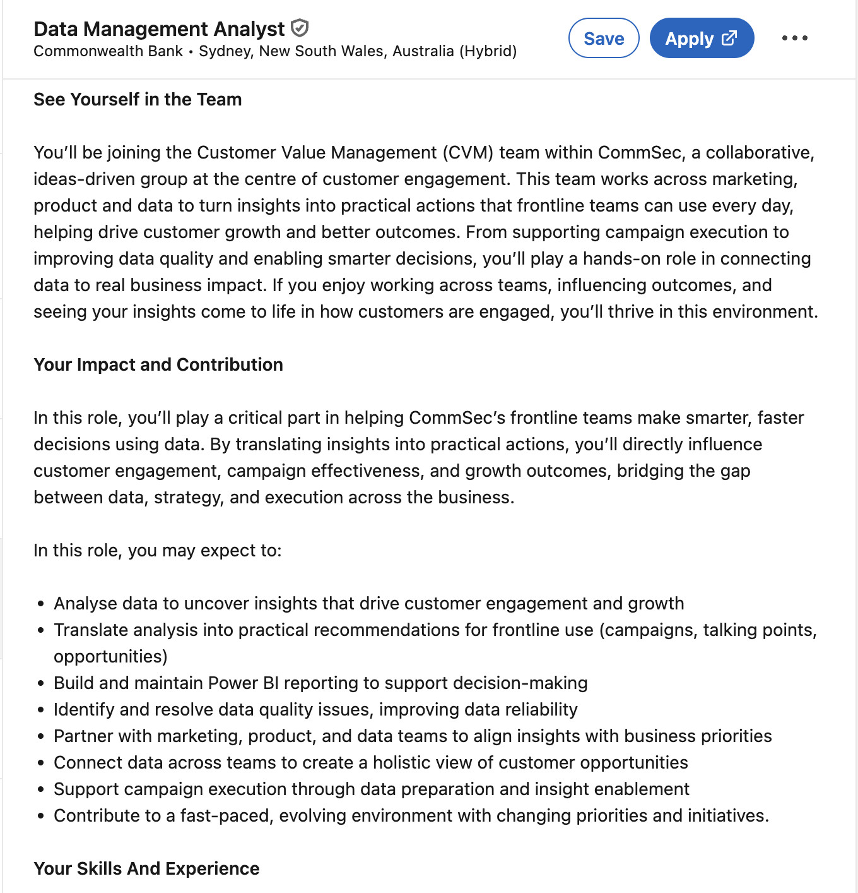
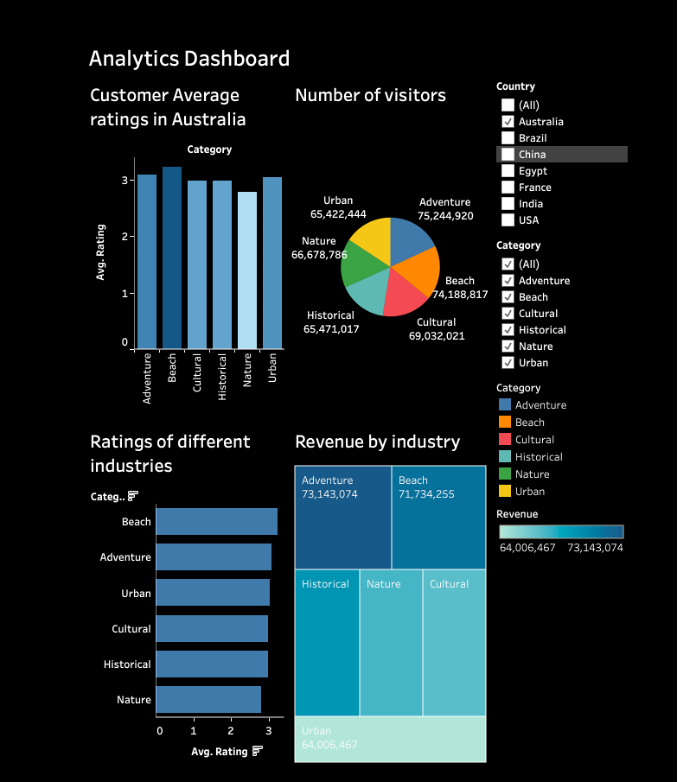

Role evidence
Target job advertisement
This evidence anchors the portfolio to the CommSec Data Management Analyst role and keeps the site focused on reporting, data quality and customer engagement.
View role fit →Evidence gallery
This page is focused on role alignment, technical project evidence, team collaboration and continuous learning.

Role evidence
This evidence anchors the portfolio to the CommSec Data Management Analyst role and keeps the site focused on reporting, data quality and customer engagement.
View role fit →
Project evidence
This is the main technical evidence. It supports dashboard thinking, visual communication, analytical reasoning and decision support.
View project →
Team evidence
This evidence shows active learning, teamwork and communication. It is included briefly because the target role requires working across different business teams.
View collaboration learning →
Learning evidence
This supports curiosity and lifelong learning. It shows I am building capability beyond required coursework and linking learning to future workplace needs.
View development plan →